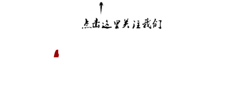

收录于合集

简
**张一飞
**
外交学院国际关系研究所博士生，万门大学国际关系史主讲教师。本科就读于对外经贸大学国际关系学院国际政治系，硕士就读于美国爱荷华州立大学政治科学系国际关系方向，在中美皆有学术论文发表。
本文经国政学人公众号首发，转载请注明来处！ **
**
国际格局 主要指涉国际范围内主权国家之间根据权力分配形成的结构体系，它是主权国家体系形成后，全球化进程发展到一定阶段后的产物。 只有交互联系而无主权意识，则无法产生权力关系，而会走向融合；只有主权国家存在而无深刻联系，则无法产生结构体系，而会走向离散。 因此，在国际格局形成之初，谁主导了全球化进程的推进与主权意识的形成，谁就会在国际格局中居于权力结构的中心地位。从人类历史上看，自15世纪起，是欧洲国家掌握了国际格局形成阶段的“天时”。
**“欧洲中心”格局的兴起
**
全球化进程由欧洲国家开启。作为“海洋—商业—军事”文明的载体（区别于“大陆—农业—文化”文明载体）， 欧洲各国对于海外世界的探索极为热衷。“海洋文明”属性使欧洲国家对外部充满好奇，对家园没有情感羁绊，原因在于：支离破碎的地理环境和政治环境没有产生内部向心力；“商业文明”属性使欧洲国家对贸易持久狂热，对耕作没有耐心，自古希腊时期起，欧洲人便“宁为海盗，不为耕夫”；“军事文明”属性使欧洲国家对于征服习以为常，对抢掠没有道德负担，自古希腊时期起，几乎各城邦国家都鼓励外出劫掠。因此，有了成熟的技术，加上早期殖民国家支持，欧洲航海家从15世纪开启了大航海时代，他们对于建立全世界的联系与沟通功不可没。
从1488年迪亚士抵达好望角到1492年哥伦布发现美洲大陆，从达伽马抵达印度到麦哲伦环球航行，一大批欧洲的优秀航海家勾勒出了全世界的海洋航路。掌握航路不仅意味着巨额的经济利益，也意味着价值观念和政治理念的传播。掌握经济利益，意味着硬实力的增强；传播价值理念，意味着软实力的扩散。从根本上加速了全球化进程的欧洲，在软硬实力上都逐渐凌驾于各其他文明国家之上。
主权概念在欧洲形成。 与新航路带来的现实变化相辅相成的是欧洲精神世界的变化。一方面，新航路开辟带来的巨大贸易利益使欧洲资本主义力量空前发展，原来“神权—君权”的权力结构对个人自由和世俗社会的限制，日益成为资产阶级利益最大化的障碍；另一方面，提倡简化宗教的宗教改革和以人为本的文艺复兴，为更多欧洲国家指出了新方向，即宗教世俗化，政治自由化。在物质层面和精神层面都经历了巨大变革后，让·博丹、格劳修斯等一批思想家就君主国家兴起提出了“主权”概念，即“对内最高、对外独立的，绝对的，永恒的，最高的权力”。主权概念从根本上终结了神权的权威，确立了世俗民族国家的永恒存在和权力界限，并且在三十年战争（天主教国家和新教国家的战争，1618—1648年）后得到欧洲各国的普遍承认。随着欧洲后来的殖民扩张，主权概念为各个文明国家所接受，直到今天仍然作为国际关系的核心概念存在，其发源地在国际格局形成之初，自然而然掌握了巨大的组织能力和话语权威。可以说， 主权概念是欧洲塑造世界和统治世界的基础和开始。
“欧洲中心”格局的崩溃
**** 主权概念的确立一定程度上解决了国家存在的问题，但并没有解决国家安全的问题 ，存在只是活着，但活着不一定安全，更不一定幸福。从17世纪后半叶起，欧洲的内部围绕国家安全持续战争；尤其是自19世纪后半叶起，欧洲在国际格局中的权力中心地位经由欧洲内部的权力斗争逐渐丧失。
权力均衡难实现。 三十年战争后，尤其到了工业革命之后，欧洲的世界中心地位得以确立，但是欧洲内部始终面临权力均衡难题，以至于战争不断。 所谓权力均衡难题，是指欧洲各国在从神权中解放出来之后，多个世俗权力中心并立，以致无法真正实现相互制衡与大局稳定。 以三十年战争后至一战前欧洲经典“五强格局”为例，英国始终扮演离岸平衡手的角色，加入弱小同盟制衡欧洲大陆的最强者；法国与德国（1871年之前为普鲁士）不断争夺欧洲大陆霸主地位；奥地利领袖中欧（1867—1918年为奥匈帝国）；俄国随时准备西扩。这些国家各具优势：英国的海军强大，法国德国的陆军强大，奥地利占据中心位置，俄国具有辽阔内陆，并且他们都希望利用自身优势获得欧洲内部的权力中心地位，尤其是法兰西帝国和德意志帝国分别受到来自周边国家的围攻，权力均衡只能通过一次次战争得到短暂的调整与维护，很难长期实现。
安全困境难解决。 权力均衡无法实现的根本原因，是三十年战争后到二战前，处于无政府且无核威慑下的多极欧洲，始终处在安全困境之中。由于诸国都具有进攻能力，且强国之间难以获得彼此的真实意图，各强国为维护国家安全只能依赖自身实力的增强，而任何国家实力的增强都会引起其他国家的猜忌和进一步自强，这一恶性循环最终往往以战争收场。最典型的案例就是第一次世界大战。战前，英国和德国对彼此的海洋力量都有所顾忌，但并不能真正判断对方的真实意图，于是陷入防御性军备竞赛，在萨拉热窝事件后，通过战争释放了各自积累的怨气和能量。 由于国家安全是国家关心的第一要务，各国不得不在涉及安全的事务上采取“底线思维”，将最坏情况视作常态，最后往往导致“自我实现的预言”，这正是欧洲历史上“大国政治的悲剧”。
内耗过大难挽回。 在经历了遗产继承战争、西班牙王位继承战争、英荷战争、北方战争、拿破仑战争、德国统一战争、第一次世界大战、第二次世界大战之后，欧洲在物质和精神上确立的绝对优势消耗殆尽。尤其是19世纪中叶第二次工业革命开始之后，世界其他地区与欧洲的相对差距逐渐缩小，尽管其精神遗产仍然影响着人类历史的进程，但是在国际格局中的权力中心地位逐渐丧失，尤其是在两次世界大战期间，欧洲殖民体系的崩溃以及美国和苏联的崛起对“欧洲中心”格局形成了根本性挑战，欧洲在伤及元气的内耗中丧失了对外部世界的干预和控制，逐渐由中心权力沦为一般权力。
“欧洲中心”格局的兴起是欧洲连接世界、塑造世界的过程，其衰落是欧洲内部消耗和外部崛起的产物。 把欧洲近代历史与古希腊城邦历史、中国春秋战国历史、日本战国历史等时期放在一起进行比较，它们的时间长度、战争进程、兴衰原因都十分相似。在比较中可以发现： 从权力关系来看，多极体系中国家对外政策灵活性极强， “朝秦暮楚”即为常态，极不稳定，至少不如两极格局稳定； 从国家战略来看，国家之间彼此不能判断真实意图是主权国家的根本性“诅咒”， 只要这一点仍然是现实，国家在思维的内核中便不会放弃“底线”思考和最坏打算； 从国家崛起来看，新兴国家在崛起过程中必须能够为其所处的国际环境和社会提供新质， 如技术革命、思想更新、制度设计等，才能是真正意义上的崛起，而不是单纯物质权力层面的挑战。
来源： 《 学习时报》16年10月17日第006版
筛选： 晞哲 编辑： 敖遊
声 明
国政学人微信公众平台系非盈利学术平台。建立初衷是方便广大学人进行学术研究，促进学术的传播和交流，不做任何商业用途。如有任何权利问题，请直接与我们联系。